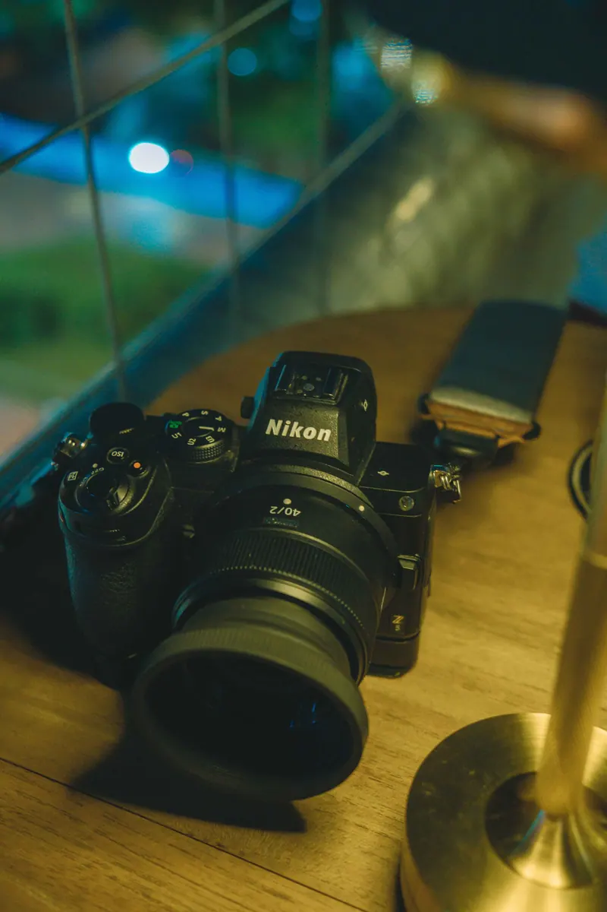

Sujana KamasanyPhotographer & Filmmaker
- Base
- Bengaluru / Hyderabad
- Focus
- Portraits / Celebrity / Brands / Film
- Index
- Portfolio 2026
Selected work
Celebrity & Actors
10 framesBrands & Editorial
11 framesFilm
About

I’m Sujana Kamasany, a photographer and filmmaker working between Bengaluru and Hyderabad. I make portraits, actor portfolios, brand campaigns and short films — frames that sit somewhere between a still and a film still.
- 36K+
- Posts shared
- 125+
- Based in
- BLR · HYD
Contact